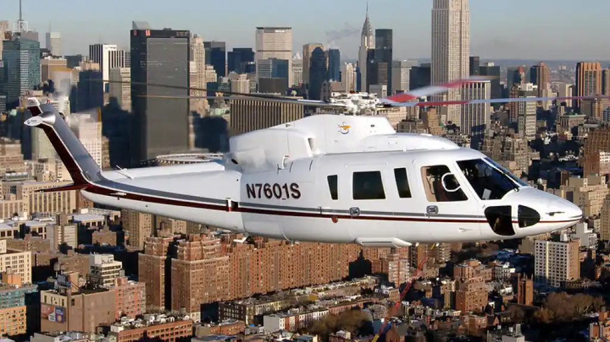
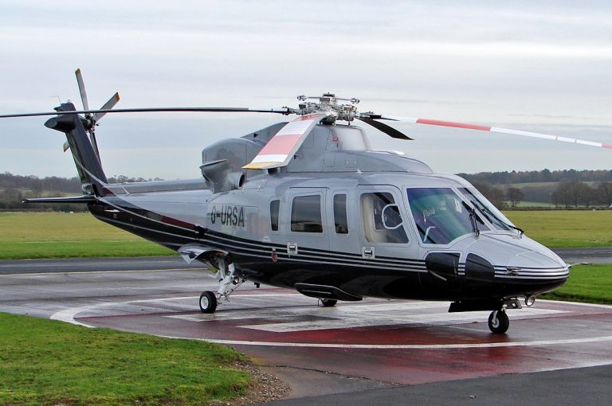
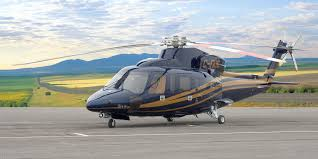
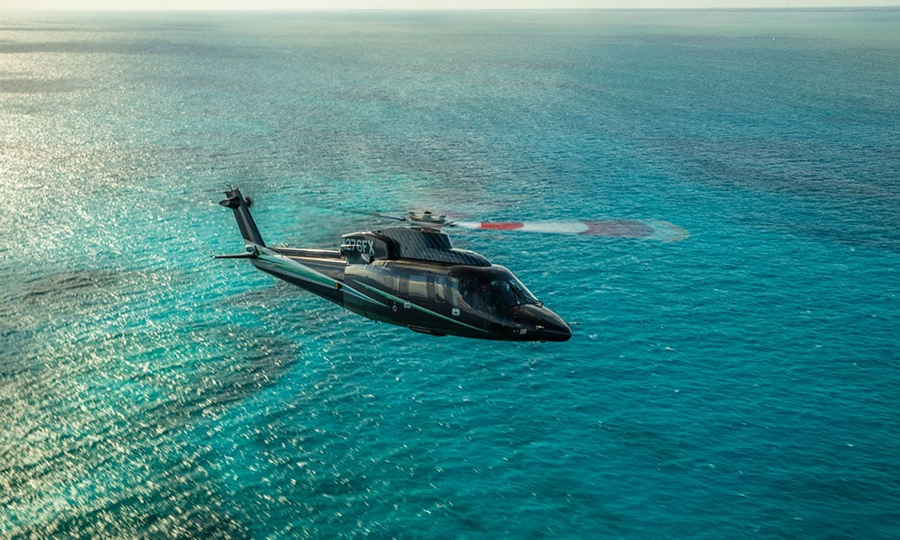
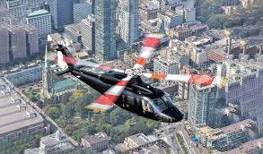
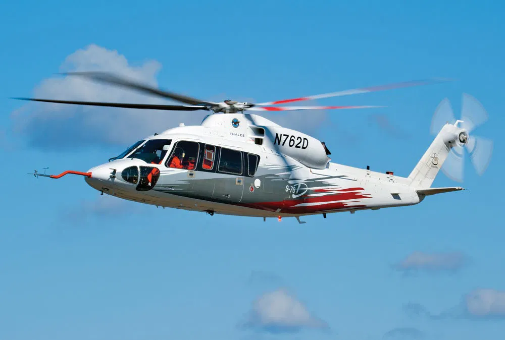

Sikorsky S-76 (helicóptero)
El Sikorsky S-76 es un helicóptero premium de rescate, evacuación médica y transporte ejecutivo. Puede transportar hasta 12 pasajeros, alcanza los 287 km/h y su alcance es de 832 km. sistemas de seguridad de última generación y alta confiabilidad. Es muy utilizado por fuerzas de emergencia alrededor del mundo.




